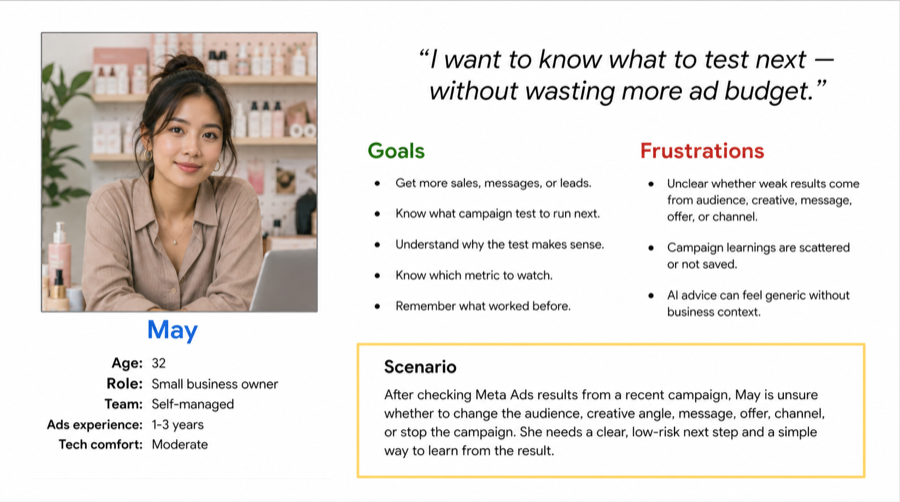

AI Campaign Strategist
A UX case study about turning campaign complexity into a simpler decision flow. I used research, marketing context, and prototype direction to shape a workspace that helps small business owners decide what to test next and why.

Overview
AI Campaign Strategist is designed for small business owners who run ads themselves. I framed the core job as a next-test decision problem: what to test next, why it makes sense, what metric to watch, and what to learn from the result.
My digital marketing background made the gap clear. Many teams can see campaign data, but still struggle to turn it into a confident next action.
Problem
Small business owners who run ads themselves need a clear, low-risk way to decide the next campaign test after reviewing results. Performance data alone often does not explain whether they should change the audience, creative angle, message, offer, channel, or stop the campaign.
Design challenge
- Users already check campaign results, but learnings are scattered.
- AI advice can feel generic when it is not tied to product context or past results.
- Users need reasoning and metrics before trusting a recommendation.
- The prototype must stay simple enough to test the learning loop.
Desk research
I used secondary research to test whether the survey pattern was broader than one sample and to understand what the interface needed to explain.
Marketing measurement is fragmented, and many teams still do not combine attribution, marketing mix modeling, and incrementality experiments.
Trust in marketing measurement is weak, so AI recommendations need visible reasoning and clear decision logic.
Creative quality is treated as important, but creative impact is often not measured clearly.
Small businesses adopt digital and AI tools, but time, skills, cost, and implementation barriers remain.
Market and competitor review
I reviewed AI creative tools, ad platform automation, experimentation tools, and manual alternatives to see where the product should stay focused and where it should not compete.
The prototype should not compete as another generic AI ad generator. It should focus on what to test next, why that test makes sense, what metric to watch, and how the result improves future recommendations.
Research evidence
The current research is directional, not statistically representative. It is based on 20 valid survey responses plus desk research and competitor review.
Respondents were small business owners running ads themselves.
Respondents used past campaign results to decide what to test next.
Respondents needed reasoning or logic before trusting an AI recommendation.
Users are not only asking for more ideas. They need explanation, creative/message direction, learning from results, metrics, and a campaign structure they can act on.



Define
I framed the user need around a repeatable next-test decision, not around a dashboard or content generator.
Point of view
Small business owners running ads themselves need a clear way to decide the next campaign test after checking results, because their current process depends on scattered past learnings, unclear performance signals, and AI advice that can feel generic without reasoning.
How Might We questions used
- How might we help users understand what to test next after checking campaign results?
- How might we explain why a recommended test makes sense using simple marketing logic?
- How might we help users turn past campaign results into reusable learning?


Ideation
I chose the Next-Test Recommendation Flow because it answered the research problem directly and avoided turning the prototype into a large strategy engine before the core loop was validated.
User enters or reviews campaign performance.
AI recommends one primary test with reasoning.
The recommendation includes how the user should judge the test.
The result becomes reusable context for future recommendations.

Low-fi wireframes
Early low-fidelity screens explored the core workspace structure before the prototype was refined into the final Product, Campaign, and Result model.


.webp)

.webp)

Prototype model
The confirmed high-fidelity prototype uses three top-level areas. I kept the model narrow so users can understand the workflow before the product expands into a larger analytics system.
Navigation
- Product: create, view, edit, and select product context.
- Campaign: opens Campaign Ideas by default; Campaign Variables is one click deeper.
- Result: record campaign results and view AI Analysis.
Reusable pattern
A right-side Create/View/Edit Drawer is used for Product, Campaign Variable, Campaign Idea, and Result Record. This avoids making every object a separate full page.


Reusable UI system
The system focused on practical prototype consistency: foundations, components, icon slots, AI labels, result status chips, and reusable drawer behavior.


High-fi prototype
The final prototype direction uses the confirmed top-level areas Product, Campaign, and Result, with Campaign Variables one click deeper and AI Analysis under Result.


Live prototype
The embedded Figma prototype lets viewers try the Product, Campaign, Result, drawer, and AI Analysis flow directly inside the case study.
Validation plan
The next test is a comprehension check, not a launch-performance test. The goal is to verify whether users understand the product model before adding more screens or automation.
What the test should check
- Users understand campaign variables as inputs.
- Users understand campaign ideas as outputs.
- Users understand result records feed AI Analysis.
- Users understand AI recommendations affect future variables and campaign ideas.
Iteration boundary
If users are confused, the next iteration should fix labels, helper copy, drawer behavior, or navigation hierarchy. It should not expand into a dashboard, full ad-platform automation, or strategy engine before the simple loop is understood.
Current outcome
The project is currently at clickable prototype readiness, not a launched-product outcome. My contribution was shaping the product framing, narrowing the workflow, and defining the main interaction model for Product, Campaign, Result, Campaign Variables, AI Analysis, and key create drawers.
Next validation step
Run early usability feedback to test whether users understand that variables are inputs, campaign ideas are outputs, result records feed AI Analysis, and AI recommendations affect future variables and campaign ideas.
No launch metrics, revenue impact, or retention claims are used here because they are not available in the project evidence.
Hiring contact
For UX/UI design roles, portfolio review, or interview scheduling, contact me here.